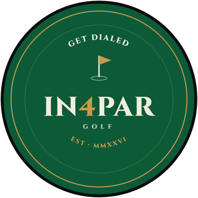

A GoFundMe page to raise $25,000 for a bronze bust of the founder of the National Black Golf Hall of Fame, January 1 to August 31, 2027.
| Field | Entry |
|---|---|
| Title | Honor Harold Dunovant: A Bronze Bust for the Hall of Fame Founder |
| Goal | $25,000 |
| Beneficiary | National Black Golf Hall of Fame, 501(c)(3), Tax ID 26-2420132 (gifts are tax-deductible) |
| Organizers | John Simpson and Ian Saunders, with Jeff Dunovant as team member |
| Opens | January 1, 2027 |
| Closes | August 31, 2027 |
| Cover photo | Harold Dunovant portrait, or Harold at an induction ceremony |
| Cover video | Jeff Dunovant's Black History reel from John A. White Golf Course (@johnawhitegc), the Titleist story, cut to 60 to 90 seconds with Jeff's OK |
In 1986, Harold Dunovant made sure Black golf would be remembered.
He saw that the players, builders and pioneers who carried Black golf through segregation were going unrecorded. So he started a record of his own: the National Black Golf Hall of Fame. Forty years later, that record holds more than 160 names, and it is still growing.
In 1963, Harold became the first Black golf professional to manage a golf course for the City of New York, at Kissena Park in Queens. He owned the golf shop and bought every piece of merchandise himself. One company would sell to him: Titleist.
Harold was also the first Black graduate of the PGA Business School. He spent his career opening doors in the business of the game, and his life making sure the people who came before him got their due.
Now we want to give Harold his due.
We are commissioning a bronze bust of Harold Dunovant, created by [sculptor], to stand at [location]. It will be unveiled at [event] on [date], in front of the family, the inductees and the community he built.
It will be a companion to the bust honoring William Powell, who built Clearview Golf Club in 1946. In 2026, Clearview and the Hall of Fame celebrated 120 combined years of keeping Black golf history alive. The two founders belong side by side.
Our goal: 250 people at $100 each.
Two hundred and fifty golfers, members, families and friends who believe the man who honored everyone else deserves a place of honor too. Every $100 donor will have their name listed [on a plaque at the base of the bust / on the Hall of Fame website].
"Titleist was the only company that gave my dad an opportunity to feed me, my mom, my brothers. Where would I be today? I don't think I would be playing golf without my dad. My dad showed me everything about the game and how to play the game."
Jeff Dunovant, Harold's son, PGA member and General Manager of John A. White Golf Course
Donors see this table on the page, so every line gets a real number before launch.
| Item | Amount |
|---|---|
| Sculpture, bronze casting and patina | $[ ] |
| Display base and protective case | $[ ] |
| Shipping and insurance | $[ ] |
| Unveiling ceremony | $[ ] |
| Campaign management and promotion ([7.5 to 10]%) | $[ ] |
| GoFundMe payment processing (about 3%) | about $800 |
| Total | $25,000 |
Funds go directly to the National Black Golf Hall of Fame, a registered 501(c)(3). Every donor receives a tax receipt. Anything raised above the goal supports [the Hall of Fame's work recording inductee histories].
| Gift | Level | Recognition |
|---|---|---|
| $25+ | Supporter | Thank-you from the family and an invitation to the virtual unveiling |
| $100+ | Founders Circle | Name on the [plaque / Hall of Fame website] |
| $500+ | Champions | Founders Circle, plus a named seat at the unveiling |
| $1,000+ | Legacy | Champions, plus a larger engraved name and a photo with the bust |
| When | Milestone |
|---|---|
| January 1, 2027 | Campaign opens |
| [Month] | Sculptor finishes the clay model; first look shared with donors |
| [Month] | Bronze casting |
| August 31, 2027 | Campaign closes |
| [Date] | Unveiling at [event] |
Questions? Contact [email / phone].
In 1986, Harold Dunovant founded the National Black Golf Hall of Fame so our legends would be remembered by name.
Today we're raising $25,000 for a bronze bust in his honor. The goal: 250 people at $100 each. Every $100 donor's name goes on the plaque.
Will you be one of the 250? [link]
Harold Dunovant founded the Black Golf Hall of Fame in 1986. We're putting up a bronze bust in his honor, and we need 250 people at $100. Will you be one? [link]
Thank you for honoring Harold Dunovant. You're now part of the Founders Circle, and your name will be on [the plaque]. We'll send updates as the bust takes shape, and an invitation to the unveiling.
John Simpson, Ian Saunders and the Dunovant family